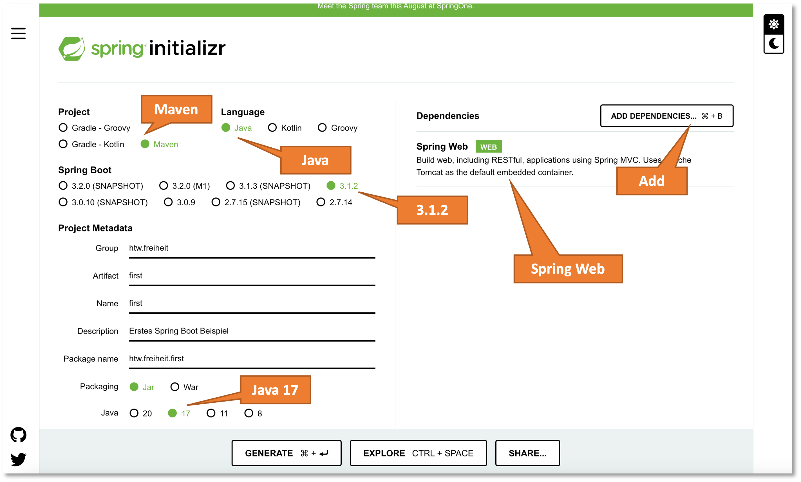
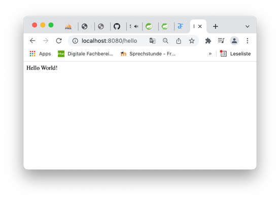

Spring¶
Spring ist ein Open-Source-Java-Framework, um große Anwendungen zu schreiben. Spring Boot ist eine Konfigurationsplattform, die bei der Erstellung einer Spring-Anwendung hilft. Wesentliche Konzepte bzw. Kernfunktionalitäten von Spring sind
- Dependency Injection
- Model View Controller (MVC) Webanwendungen
- RESTful Webservices
- Datenbankanbindungen (Java Database Connectivity - JDBC)
Wir werden alle diese Konzepte im Laufe der Verwendung von Spring kennenlernen. Wir beginnen mit einer ganz einfachen Anwendung.
IntelliJ¶
Die Screenshots von Programmcode zeigen die IDE IntelliJ. es wird empfohlen, diese IDE für die Java-Entwicklung zu verwenden. Gute Alternativen sind die aus der Prog-Vorlesung bekannte IDE Eclipse oder Visual Studio Code. Letzteres eignet sich insbesondere für die Entwicklung von Webanwendungen. In WebTech und IKT verwenden wir es auch.
Um die Ultimate-Version von IntelliJ kostenlos verwenden zu können, müssen Sie bei JetBrains einen Account unter Verwendung Ihrer HTW-E-Mail-Adresse anlegen. Dann erhalten Sie über die Student Pack License eine kostenlose Version von IntelliJ IDEA Ultimate.
FirstApplication¶
-
Um ein Spring Boot Projekt anzulegen, bietet sich der Spring Initializr an. Dies ist eine Webanwendung, in der sich mit einigen Auswahlklicks ein Projekt vorkonfigurieren lässt. Spring Boot gibt es seit einiger Zeit in Version
3. Diese wollen wir auch nutzen. Wir benötigen dazu die JDK in Version17oder höher. Wir rufen die Webseite https://start.spring.io/ (den * Initializr* auf):
-
Wählen Sie in
Groupein passendespackage, hier z.B.htw.freiheit. Wählen Sie inArtifact(ist gleich mitName) einen passenden Namen für Ihr Projekt, hier z.B.first. -
GENERATEklicken. Die Dateifirst.zipwird heruntergeladen. Die Datei entpacken und den Ordnerfirstin Ihren workspace schieben. -
Öffnen Sie das Projekt
firstin Ihrer IDE und öffnen Sie dann dieFirstApplication.javaim Editor:
-
Ergänzen Sie die
FirstApplication.javawie folgt:Erläuterungen zum Code:
- Die
@RestController-Annotation gibt an, dass die Anwendung Endpunkte (hier einen Endpunkt) einer RESTful API definiert, die über das Web verfügbar sind. Durch die Annotation wird die Klasse als Bean zur Verfügung gestellt. Beans werden per dependency injection (auch Inversion of Control (IoC)) automatisch dort injiziert, wo sie benötigt werden. - Die
@GetMapping("/hello")-Annotation gibt an, dass die folgendehello()-Methode verwendet wird, um den GET-Request (die GET-Anfrage) an den Endpunkthttp://localhost:8080/hellozu beantworten. - Die
@RequestParam-Annotation gibt an, dass der folgende Parameternameeinen Wert in der Anfrage erwartet. Sollte fürnamekein Wert übergeben werden, dann wird der Standardwert"World"verwendet.
- Die
-
Das Projekt übersetzen und ausführen. Im Ordner
firstim Terminal./mvnw spring-boot:runausführen (unter Windows ruft man den Maven-Wrapper mitmvnw.cmd spring-boot:runauf). Der Befehl muss in dem Ordner ausgeführt werden, in dem sich diepom.xmlbefindet. Zunächst wird das Projekt kompiliert und gepackt und dann wird die Anwendung ausgeführt. Es erscheinen ungefähr folgende Ausgaben:jornfreiheit@MB-JF first % ./mvnw spring-boot:run [INFO] Scanning for projects... [INFO] [INFO] -------------------------< htw.freiheit:first >------------------------- [INFO] Building first 0.0.1-SNAPSHOT [INFO] from pom.xml [INFO] --------------------------------[ jar ]--------------------------------- [INFO] [INFO] >>> spring-boot:3.1.2:run (default-cli) > test-compile @ first >>> [INFO] [INFO] --- resources:3.3.1:resources (default-resources) @ first --- [INFO] Copying 1 resource from src/main/resources to target/classes [INFO] Copying 0 resource from src/main/resources to target/classes [INFO] [INFO] --- compiler:3.11.0:compile (default-compile) @ first --- [INFO] Changes detected - recompiling the module! :source [INFO] Compiling 1 source file with javac [debug release 17] to target/classes [INFO] [INFO] --- resources:3.3.1:testResources (default-testResources) @ first --- [INFO] skip non existing resourceDirectory /Users/jornfreiheit/Documents/HTW/04_Projekte/Code/first/src/test/resources [INFO] [INFO] --- compiler:3.11.0:testCompile (default-testCompile) @ first --- [INFO] Changes detected - recompiling the module! :dependency [INFO] Compiling 1 source file with javac [debug release 17] to target/test-classes [INFO] [INFO] <<< spring-boot:3.1.2:run (default-cli) < test-compile @ first <<< [INFO] [INFO] [INFO] --- spring-boot:3.1.2:run (default-cli) @ first --- [INFO] Attaching agents: [] . ____ _ __ _ _ /\\ / ___'_ __ _ _(_)_ __ __ _ \ \ \ \ ( ( )\___ | '_ | '_| | '_ \/ _` | \ \ \ \ \\/ ___)| |_)| | | | | || (_| | ) ) ) ) ' |____| .__|_| |_|_| |_\__, | / / / / =========|_|==============|___/=/_/_/_/ :: Spring Boot :: (v3.1.2) 2023-07-27T15:48:46.288+02:00 INFO 72114 --- [ main] htw.freiheit.first.FirstApplication : Starting FirstApplication using Java 20.0.1 with PID 72114 (/Users/jornfreiheit/Documents/HTW/04_Projekte/Code/first/target/classes started by jornfreiheit in /Users/jornfreiheit/Documents/HTW/04_Projekte/Code/first) 2023-07-27T15:48:46.289+02:00 INFO 72114 --- [ main] htw.freiheit.first.FirstApplication : No active profile set, falling back to 1 default profile: "default" 2023-07-27T15:48:46.614+02:00 INFO 72114 --- [ main] o.s.b.w.embedded.tomcat.TomcatWebServer : Tomcat initialized with port(s): 8080 (http) 2023-07-27T15:48:46.619+02:00 INFO 72114 --- [ main] o.apache.catalina.core.StandardService : Starting service [Tomcat] 2023-07-27T15:48:46.619+02:00 INFO 72114 --- [ main] o.apache.catalina.core.StandardEngine : Starting Servlet engine: [Apache Tomcat/10.1.11] 2023-07-27T15:48:46.669+02:00 INFO 72114 --- [ main] o.a.c.c.C.[Tomcat].[localhost].[/] : Initializing Spring embedded WebApplicationContext 2023-07-27T15:48:46.670+02:00 INFO 72114 --- [ main] w.s.c.ServletWebServerApplicationContext : Root WebApplicationContext: initialization completed in 358 ms 2023-07-27T15:48:46.795+02:00 INFO 72114 --- [ main] o.s.b.w.embedded.tomcat.TomcatWebServer : Tomcat started on port(s): 8080 (http) with context path '' 2023-07-27T15:48:46.800+02:00 INFO 72114 --- [ main] htw.freiheit.first.FirstApplication : Started FirstApplication in 0.654 seconds (process running for 0.781)
Nun im Browser http://localhost:8080/hello eingeben. Es erscheint:

Nun im Browser http://localhost:8080/hello?name=FIW und es erscheint Hello FIW!.
Maven¶
Das erste Spring-Projekt first haben wir mithilfe von Maven übersetzt und ausgeführt. Maven ist ein Build-Werkzeug, ähnlich wie make für C-Programme oder Gradle, ebenfalls für Java.
Maven erwartet folgende einheitliche Projektstruktur des Java-Projektes:
projekt
+- pom.xml
+- src/
+- main/
+- java/
+- resources/
+- test/
+- java/
+- resources/
+- target/
In der pom.xml werden alle Abhängigkeiten definiert. Die pom.xml aus dem first-Projekt sieht z.B. so aus:
<?xml version="1.0" encoding="UTF-8"?>
<project xmlns="http://maven.apache.org/POM/4.0.0" xmlns:xsi="http://www.w3.org/2001/XMLSchema-instance"
xsi:schemaLocation="http://maven.apache.org/POM/4.0.0 https://maven.apache.org/xsd/maven-4.0.0.xsd">
<modelVersion>4.0.0</modelVersion>
<parent>
<groupId>org.springframework.boot</groupId>
<artifactId>spring-boot-starter-parent</artifactId>
<version>3.1.2</version>
<relativePath/> <!-- lookup parent from repository -->
</parent>
<groupId>htw.freiheit</groupId>
<artifactId>first</artifactId>
<version>0.0.1-SNAPSHOT</version>
<name>first</name>
<description>Erstes Spring Boot Beispiel</description>
<properties>
<java.version>17</java.version>
</properties>
<dependencies>
<dependency>
<groupId>org.springframework.boot</groupId>
<artifactId>spring-boot-starter-web</artifactId>
</dependency>
<dependency>
<groupId>org.springframework.boot</groupId>
<artifactId>spring-boot-starter-test</artifactId>
<scope>test</scope>
</dependency>
</dependencies>
<build>
<plugins>
<plugin>
<groupId>org.springframework.boot</groupId>
<artifactId>spring-boot-maven-plugin</artifactId>
</plugin>
</plugins>
</build>
</project>
Es handelt sich um eine XML-Datei, die alle zur Ausführung des Projektes notwendigen Informationen (Abhängigkeiten - dependencies) enthält. POM steht für Project Object Model.
Testgetriebene Entwicklung¶
Spring Boot unterstützt sehr gut Unit-Tests. Die Testklassen liegen unterhalb des Pfades src/test/java und die für die Tests benötigten Ressourcen werden typischer Weise unter src/test/resources abgelegt (Letzteres existiert aber noch nicht). Ein gutes Vorgehen zur Erstellung einer REST-API ist das Beschreiben der Anforderungen in Unit-Tests. Diese schlagen zunächst fehl. Die Implementierung wird dann so gestaltet, dass diese Tests irgendwann erfolgreich durchlaufen werden. Diese Vorgehen nennt sich testgetriebene Entwicklung (test-driven development). Siehe dazu auch Test-Driven Development im Prog2-Skript.
Die Tests werden mithilfe des Befehls ./mvnw test (unter Windows mvnw.cmd test) ausgeführt. Wir betrachten ein einfaches Beispiel. Zunächst erstellen wir ein Unterpaket rest und darin eine Klasse UserController.java:
Darin vereinbaren wir einen Endpunkt /user über den wir alle eingetragenen Nutzerinnen aus der Datenbank (die wir später anlegen) auslesen wollen. Dieses Auslesen übernimmt die Methode getUsers(). Derzeit liefert dieses Methode jedoch nur den Http-Statuscode der Anfrage zurück. Die Methode macht also noch nicht wirklich etwas, wir wollen jedoch einen entsprechenden Unit-Test dafür schreiben:
Wenn wir nun den Test mithilfe von /mvnw test (bzw. mvnw.cmd test) starten, dann werden die Tests erfolgreich durchlaufen, da unsere Implementierung des UserController sehr rudimentär ist. Es wird lediglich der Statuscode 200 - OK zurückgegeben und das ist auch genau das, was im Test abgefragt wird. Die Terminalausgabe sieht ungefähr so aus:
./mvnw test
[INFO] ------------------------------------------------------------------------
[INFO] BUILD SUCCESS
[INFO] ------------------------------------------------------------------------
[INFO] Total time: 18:26 h
[INFO] Finished at: 2023-07-28T10:15:14+02:00
[INFO] ------------------------------------------------------------------------
jornfreiheit@MB-JF first % ./mvnw test
[INFO] Scanning for projects...
[INFO]
[INFO] -------------------------< htw.freiheit:first >-------------------------
[INFO] Building first 0.0.1-SNAPSHOT
[INFO] from pom.xml
[INFO] --------------------------------[ jar ]---------------------------------
[INFO]
[INFO] --- resources:3.3.1:resources (default-resources) @ first ---
[INFO] Copying 1 resource from src/main/resources to target/classes
[INFO] Copying 0 resource from src/main/resources to target/classes
[INFO]
[INFO] --- compiler:3.11.0:compile (default-compile) @ first ---
[INFO] Changes detected - recompiling the module! :input tree
[INFO] Compiling 2 source files with javac [debug release 17] to target/classes
[INFO]
[INFO] --- resources:3.3.1:testResources (default-testResources) @ first ---
[INFO] skip non existing resourceDirectory /Users/jornfreiheit/Documents/HTW/04_Projekte/Code/first/src/test/resources
[INFO]
[INFO] --- compiler:3.11.0:testCompile (default-testCompile) @ first ---
[INFO] Changes detected - recompiling the module! :dependency
[INFO] Compiling 2 source files with javac [debug release 17] to target/test-classes
[INFO]
[INFO] --- surefire:3.0.0:test (default-test) @ first ---
[INFO] Using auto detected provider org.apache.maven.surefire.junitplatform.JUnitPlatformProvider
Downloading from central: https://repo.maven.apache.org/maven2/org/apache/maven/surefire/surefire-junit-platform/3.0.0/surefire-junit-platform-3.0.0.pom
Downloaded from central: https://repo.maven.apache.org/maven2/org/apache/maven/surefire/surefire-junit-platform/3.0.0/surefire-junit-platform-3.0.0.pom (4.5 kB at 24 kB/s)
Downloading from central: https://repo.maven.apache.org/maven2/org/apache/maven/surefire/surefire-providers/3.0.0/surefire-providers-3.0.0.pom
Downloaded from central: https://repo.maven.apache.org/maven2/org/apache/maven/surefire/surefire-providers/3.0.0/surefire-providers-3.0.0.pom (2.5 kB at 127 kB/s)
Downloading from central: https://repo.maven.apache.org/maven2/org/apache/maven/surefire/common-java5/3.0.0/common-java5-3.0.0.pom
Downloaded from central: https://repo.maven.apache.org/maven2/org/apache/maven/surefire/common-java5/3.0.0/common-java5-3.0.0.pom (2.7 kB at 76 kB/s)
Downloading from central: https://repo.maven.apache.org/maven2/org/junit/platform/junit-platform-launcher/1.3.2/junit-platform-launcher-1.3.2.pom
Downloaded from central: https://repo.maven.apache.org/maven2/org/junit/platform/junit-platform-launcher/1.3.2/junit-platform-launcher-1.3.2.pom (2.2 kB at 117 kB/s)
Downloading from central: https://repo.maven.apache.org/maven2/org/junit/platform/junit-platform-engine/1.3.2/junit-platform-engine-1.3.2.pom
Downloaded from central: https://repo.maven.apache.org/maven2/org/junit/platform/junit-platform-engine/1.3.2/junit-platform-engine-1.3.2.pom (2.4 kB at 120 kB/s)
Downloading from central: https://repo.maven.apache.org/maven2/org/junit/platform/junit-platform-commons/1.3.2/junit-platform-commons-1.3.2.pom
Downloaded from central: https://repo.maven.apache.org/maven2/org/junit/platform/junit-platform-commons/1.3.2/junit-platform-commons-1.3.2.pom (2.0 kB at 106 kB/s)
Downloading from central: https://repo.maven.apache.org/maven2/org/apache/maven/surefire/surefire-junit-platform/3.0.0/surefire-junit-platform-3.0.0.jar
Downloaded from central: https://repo.maven.apache.org/maven2/org/apache/maven/surefire/surefire-junit-platform/3.0.0/surefire-junit-platform-3.0.0.jar (27 kB at 938 kB/s)
Downloading from central: https://repo.maven.apache.org/maven2/org/apache/maven/surefire/common-java5/3.0.0/common-java5-3.0.0.jar
Downloading from central: https://repo.maven.apache.org/maven2/org/junit/platform/junit-platform-launcher/1.3.2/junit-platform-launcher-1.3.2.jar
Downloading from central: https://repo.maven.apache.org/maven2/org/junit/platform/junit-platform-engine/1.3.2/junit-platform-engine-1.3.2.jar
Downloading from central: https://repo.maven.apache.org/maven2/org/junit/platform/junit-platform-commons/1.3.2/junit-platform-commons-1.3.2.jar
Downloaded from central: https://repo.maven.apache.org/maven2/org/apache/maven/surefire/common-java5/3.0.0/common-java5-3.0.0.jar (18 kB at 763 kB/s)
Downloaded from central: https://repo.maven.apache.org/maven2/org/junit/platform/junit-platform-commons/1.3.2/junit-platform-commons-1.3.2.jar (78 kB at 1.0 MB/s)
Downloaded from central: https://repo.maven.apache.org/maven2/org/junit/platform/junit-platform-launcher/1.3.2/junit-platform-launcher-1.3.2.jar (95 kB at 1.2 MB/s)
Downloaded from central: https://repo.maven.apache.org/maven2/org/junit/platform/junit-platform-engine/1.3.2/junit-platform-engine-1.3.2.jar (138 kB at 1.5 MB/s)
Downloading from central: https://repo.maven.apache.org/maven2/org/junit/platform/junit-platform-launcher/1.9.3/junit-platform-launcher-1.9.3.pom
Downloaded from central: https://repo.maven.apache.org/maven2/org/junit/platform/junit-platform-launcher/1.9.3/junit-platform-launcher-1.9.3.pom (3.0 kB at 159 kB/s)
Downloading from central: https://repo.maven.apache.org/maven2/org/junit/platform/junit-platform-launcher/1.9.3/junit-platform-launcher-1.9.3.jar
Downloaded from central: https://repo.maven.apache.org/maven2/org/junit/platform/junit-platform-launcher/1.9.3/junit-platform-launcher-1.9.3.jar (169 kB at 2.0 MB/s)
[INFO]
[INFO] -------------------------------------------------------
[INFO] T E S T S
[INFO] -------------------------------------------------------
[INFO] Running htw.freiheit.first.rest.UserControllerTest
10:15:28.194 [main] INFO org.springframework.test.context.support.AnnotationConfigContextLoaderUtils -- Could not detect default configuration classes for test class [htw.freiheit.first.rest.UserControllerTest]: UserControllerTest does not declare any static, non-private, non-final, nested classes annotated with @Configuration.
10:15:28.241 [main] INFO org.springframework.boot.test.context.SpringBootTestContextBootstrapper -- Found @SpringBootConfiguration htw.freiheit.first.FirstApplication for test class htw.freiheit.first.rest.UserControllerTest
. ____ _ __ _ _
/\\ / ___'_ __ _ _(_)_ __ __ _ \ \ \ \
( ( )\___ | '_ | '_| | '_ \/ _` | \ \ \ \
\\/ ___)| |_)| | | | | || (_| | ) ) ) )
' |____| .__|_| |_|_| |_\__, | / / / /
=========|_|==============|___/=/_/_/_/
:: Spring Boot :: (v3.1.2)
2023-07-28T10:15:28.396+02:00 INFO 34264 --- [ main] h.f.first.rest.UserControllerTest : Starting UserControllerTest using Java 20.0.1 with PID 34264 (started by jornfreiheit in /Users/jornfreiheit/Documents/HTW/04_Projekte/Code/first)
2023-07-28T10:15:28.396+02:00 INFO 34264 --- [ main] h.f.first.rest.UserControllerTest : No active profile set, falling back to 1 default profile: "default"
2023-07-28T10:15:28.821+02:00 INFO 34264 --- [ main] o.s.b.t.m.w.SpringBootMockServletContext : Initializing Spring TestDispatcherServlet ''
2023-07-28T10:15:28.821+02:00 INFO 34264 --- [ main] o.s.t.web.servlet.TestDispatcherServlet : Initializing Servlet ''
2023-07-28T10:15:28.822+02:00 INFO 34264 --- [ main] o.s.t.web.servlet.TestDispatcherServlet : Completed initialization in 0 ms
2023-07-28T10:15:28.831+02:00 INFO 34264 --- [ main] h.f.first.rest.UserControllerTest : Started UserControllerTest in 0.54 seconds (process running for 0.917)
OpenJDK 64-Bit Server VM warning: Sharing is only supported for boot loader classes because bootstrap classpath has been appended
[INFO] Tests run: 1, Failures: 0, Errors: 0, Skipped: 0, Time elapsed: 1.17 s - in htw.freiheit.first.rest.UserControllerTest
[INFO] Running htw.freiheit.first.FirstApplicationTests
2023-07-28T10:15:29.290+02:00 INFO 34264 --- [ main] t.c.s.AnnotationConfigContextLoaderUtils : Could not detect default configuration classes for test class [htw.freiheit.first.FirstApplicationTests]: FirstApplicationTests does not declare any static, non-private, non-final, nested classes annotated with @Configuration.
2023-07-28T10:15:29.293+02:00 INFO 34264 --- [ main] .b.t.c.SpringBootTestContextBootstrapper : Found @SpringBootConfiguration htw.freiheit.first.FirstApplication for test class htw.freiheit.first.FirstApplicationTests
. ____ _ __ _ _
/\\ / ___'_ __ _ _(_)_ __ __ _ \ \ \ \
( ( )\___ | '_ | '_| | '_ \/ _` | \ \ \ \
\\/ ___)| |_)| | | | | || (_| | ) ) ) )
' |____| .__|_| |_|_| |_\__, | / / / /
=========|_|==============|___/=/_/_/_/
:: Spring Boot :: (v3.1.2)
2023-07-28T10:15:29.302+02:00 INFO 34264 --- [ main] h.freiheit.first.FirstApplicationTests : Starting FirstApplicationTests using Java 20.0.1 with PID 34264 (started by jornfreiheit in /Users/jornfreiheit/Documents/HTW/04_Projekte/Code/first)
2023-07-28T10:15:29.302+02:00 INFO 34264 --- [ main] h.freiheit.first.FirstApplicationTests : No active profile set, falling back to 1 default profile: "default"
2023-07-28T10:15:29.392+02:00 INFO 34264 --- [ main] h.freiheit.first.FirstApplicationTests : Started FirstApplicationTests in 0.097 seconds (process running for 1.478)
[INFO] Tests run: 1, Failures: 0, Errors: 0, Skipped: 0, Time elapsed: 0.106 s - in htw.freiheit.first.FirstApplicationTests
[INFO]
[INFO] Results:
[INFO]
[INFO] Tests run: 2, Failures: 0, Errors: 0, Skipped: 0
[INFO]
[INFO] ------------------------------------------------------------------------
[INFO] BUILD SUCCESS
[INFO] ------------------------------------------------------------------------
[INFO] Total time: 3.157 s
[INFO] Finished at: 2023-07-28T10:15:29+02:00
[INFO] ------------------------------------------------------------------------
Beachten Sie, dass zwei Tests durchgeführt werden, da auch bereits eine FirstApplicationTests.java existiert. MockMvc ist ein Spring MVC Test Framework. Wir erweitern noch um einen weiteren Test mit MockUp-Daten, um ein wenig komplexere Anfragen zu erläutern. Später werden diese Daten in einer Datenbank vorgehalten.
Statische Importe¶
Zunächst wollen wir den Code jedoch noch insofern vereinfachen, als dass wir nicht immer die verwendeten Klassen, von denen wir statische Methoden aufrufen, explizit aufrufen müssen. Das betrifft z.B. folgenden Code:
@Test
public void testGetUsers() throws Exception {
mockMvc.perform(MockMvcRequestBuilders.get("/user"))
.andExpect(MockMvcResultMatchers.status().isOk());
}
Hier werden MockMvcRequestBuilders und MockMvcResultMatchers immer explizit aufgerufen (qualifizieren). Es hat sich jedoch bewährt, die statischen Methoden dieser Klassen statisch zu importieren, um die Lesbarkeit des Codes zu verbessern. Wir passen also den Import durch das Hinzufügen der Deklaration static und der zu verwendenden Methoden an:
und vereinfachen somit die Lesbarkeit des Codes.
Ein record UserItem¶
Wir betrachten nochmals den Code von UserController und darin insbesondere Zeile 11:
Der Rückgabetyp der Methode getUsers() ist derzeit ResponseEntity<?>. Das heißt, dass der Typ ResponseEntity (siehe hier) zwar typisiert werden muss, wir jedoch den Typ hier nicht angeben, sondern stattdessen ein ?. Die Rückgabe kann somit mit jedem beliebigen Referenztypen typisiert sein. Tatsächlich wollen wir aber sicherstellen, dass die Rückgabe einen konkreten Typ beinhaltet, nämlich UserItem. Diesen Typ erstellen wir uns:
Records stehen seit Java 17 zur Verfügung. Records sind Klassen für immutable (unveränderliche) Daten. Das bedeutet, das Äquivalent zu dem oben angegebenen Record wäre eine Klasse mit
- als
privateundfinaldeklarierten Objektvariablenusername,email,password, - einem
publicKonstruktor, dem Werte für die Objektvariablen übergeben werden und mit diesen Werten werden die Objektvariablen belegt, - getter für die Objektvariablen (aber keine setter! - die Daten sollen ja unveränderlich sein),
- Implementierungen für
equals(Object o),hashCode()undtoString().
Ein Record enthält alle diese Eigenschaften automatisch, d.h. für UserItem existiert automatisch ein Konstruktor sowie die Implementierungen von equals(Object o), hashCode() und toString(). Die getter heißen wie die Objektvariablen, also username(), email() und password() und sind Objektmethoden. Von Records kann nicht geerbt werden. Alles ist final.
Mithilfe dieser Klasse können wir ResponseEntity nun typisieren (mit List<UserItem>). Dann müssen wir aber auch darauf achten, dass tatsächlich eine List<UserItem> zurückgegeben wird. Diese erzeugen wir uns als MackUp-Daten:
Die Passwörter werden später verschlüsselt (in der Datenbank) abgelegt.
Test einer Response¶
Die GET-Anfrage an den Endpunkt /user sendet nun eine zunächst hart codierte Liste (ein Array) von zwei UserItem-Objekten zurück. Später wird diese Methode eine Datenbankabfrage durchführen. Wir können den Inhalt dieser Response mithilfe des Matchers Hamcrest verifizieren. Dieser Matcher stellt einfache Methoden, wie z.B. is() und hasSize() zur Verfügung (neben vielen anderen, siehe hier). Im folgenden Test sind diese Methoden verwendet:
JSON steht für JavaScript Object Notation und jsonPath ist eine Abfragesprache in Java für JSON. Die Response wird im JSON-Format zurückgegeben. Mithilfe von "$" wird auf die Response, also das zurückgegebene JSON zugegriffen.